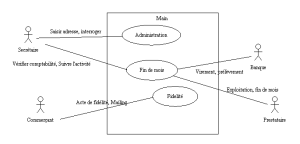
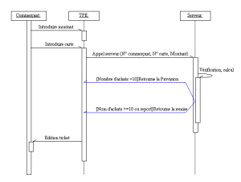
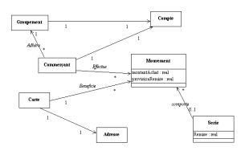

Rédaction des documents d’analyse avec U.M.L
Date de publication : 12/04/2006
2. Cas d’utilisation principal
2.1. Préambule
2.2. Use case Principal
2.2.1. Diagramme du cas d’utilisation
2.2.2. Description des acteurs
2.2.3. Description des cas d’utilisation
2.3. Acte de fidélité
2.4. Diagramme de classe
2.5. Epilogue
2. Cas d’utilisation principal
2.1. Préambule
Vous devez donc répondre au cahier des charges en tant que prestataire et montrer que vous avez compris les besoins du groupement. Vous cherchez aussi à évaluer le budget de réalisation ....
2.2. Use case Principal
Vous allez donc à définir les principales actions par lesquels les utilisateurs vont interagir avec le système d’information. Vous ne cherchez pas à entrer dans le détail mais à être exhaustif, c’est à dire couvrir l’ensemble des besoins. Vous déterminez donc un premier découpage de l’application, les acteurs puis les actions des utilisateurs sur les domaines.
2.2.1. Diagramme du cas d’utilisation
Le premier souci est de définir les grands domaines de l’application. On peut en distinguer principalement trois largement identifiés en termes d’acteurs et de moyens mis en oeuvre.
- L’administration et le paramétrage : L’administration est effectuée par la secrétaire du groupement via une interface Web.
- La fidélité proprement dite : Les actes de fidélité sont effectués chez les commerçants sur les TPE.
- Les traitements de fin de mois (statistiques et comptabilité). Ces traitements sont effectués par le prestataire informatique au titre de l’hébergement et de l’exploitation.
Les acteurs principaux sont :
- Les commerçants
- La secrétaire du groupement
- La banque semble un acteur secondaire qu’il faut mentionner. La banque sera en effet notre correspondant pour les échanges informatiques des virements et prélèvements.
- Le prestataire est aussi un acteur, notamment lors des opérations de fin de mois. Vous pouvez supposer la nécessité d’un minimum de statistiques.
Il est noté que le client final n’est pas un acteur dans le sens où il n’interagit pas directement avec le système. Le client sera considéré simplement comme une entité du système d’information.
Cas d'utilisation principal
Un schéma n’est jamais explicite en lui-même. Il doit s’accompagner d’un texte d’explication. Vous décrivez donc les acteurs puis chacunes des actions qui feront l’objet d’études plus détaillées.
2.2.2. Description des acteurs
| Acteur |
Role |
| Secrétaire |
Responsable de l’administration du groupement. |
| Commerçant |
Réalise les actes de fidélités. |
| Banque |
Acteur secondaire vers qui le système doit envoyer les virements et prélèvements du compte du groupement. |
| Prestataire |
Le prestataire est responsable de l’exploitation du système. Il intervient en fin de mois notamment pour déclencher les traitements. |
2.2.3. Description des cas d’utilisation
| Scénarios |
Description |
| Saisie des adresses |
Entrer les adresses dans la base de données avec le numéro de carte associé. Cette base de données doit permettre aux commerçants d’effectuer des mailings. |
| Interroger |
Interrogation des actes de fidélité pour renseigner les commerçants ou les clients. |
| Acte de fidélité |
Passage d’un achat de fidélité. Vous pouvez supposer des fonctions complémentaires comme l’annulation, le remboursement ou des demandes de duplicatas. |
| Mailing |
Demande de fichier d’adresse |
| Virement - prélèvement |
Calcul de la comptabilité (et des statistiques) et envoi des fichiers de virements - prélèvements à la banque. |
| Vérifier comptabilité - Suivre l’activité |
Réception des statistiques. Vérification des données comptables. |
| Exploitation (fin de mois) |
Déclenchement de la clôture du mois. Edition des statistiques. |
Ce cas d’utilisation vous permet d’obtenir une vision synthétique des fonctionnalités du système. Ils vous a (bien entendu) demandé un peu d’imagination pour prévoir des fonctionnalités non prévues dans le cahier des charges mais qui vous semble indispendables ...
Il vous aide à déterminer les principales zones de risques. La notion de risque est toujours subjective suivant les acteurs. Vous devez rassurer votre correspondant chez les commerçants et vous rassurez vous même sur les points qui vous semblent délicats ...
Plusieurs points semblent particulièrement importants :
- L’acte de fidélité. Il est en effet au coeur de l’activité du système. Sa simplicité aidera l’adhésion des commerçants. Un premier dessin du ticket remis au client permettra au groupement de concrétiser l’acte de fidélité.
- Le fait que le système comporte un TPE. Il y a là une contrainte d’architecture technique primordiale pour l’élaboration de la solution. C’est un facteur de risque important car, n’ayant pas de compétences particulières sur le developpement des TPE, vous préférez sous-traiter la solution.
- L’organisation du projet. Vous devez tenir compte que la réussite d’un projet n’est pas seulement résumée à l’informatique et que beaucoup d’acteurs vont intervenir pour le démarrage de celui-ci. L’ensemble doit être coordonné dans un temps très court. Pour des raisons commerciales, et ne pas faire peur à votre prospect, vous préférez aborder ce point oralement, et garder la rédaction du rôle de chacun des participants que si l’affaire est signée ....
Les commentaires associés au cas d’utilisation général doivent donc rapidement cerner ces points. Vous rédigez les chapitres correspondants.
2.3. Acte de fidélité
Nous devons décrire l’acte de fidélité ou plutôt, puisqu’il est bien détaillé dans le cahier des charges, montrer que vous avez parfaitement compris ce dont il s’agit. Un diagramme de séquence est tout à fait indiqué. Vous ne cherchez pas à rendre exhaustif le diagramme, mais simplement à étudier le cœur du problème dans un fonctionnement nominal.
diagramme de séquence : Acte d’achat
Vous décrivez ensuite les séquences principales du diagramme (quelque chose qui ressemble à un couper-coller du cahier des charges fera l’affaire ....).
Vous décrivez ensuite une proposition pour les deux tickets principaux à éditer. Ceci permet de concrétiser le résultat de l’acte de fidélité :
2.4. Diagramme de classe
Un premier diagramme de classe est possible. Il permet donner une approximation de la complexité du logiciel à construire.
Premier diagramme de classe
La fidélité doit permettre le remboursement des remises provisionnées. Nous appelons « Série » l’ensemble des mouvements d’achats ayant donné lieu à ce remboursement.
Plusieurs questions restent en suspend :
La carte de fidélité est un acteur du modèle. Elle sert à identifier le client. Le schéma fait porter l’adresse par la carte. Ceci corresponde il à la réalité ? Ne faut-il pas introduire la notion de client pour identifier une personne qui veut changer de carte en cas de perte, ... Une personne peut-elle avoir plusieurs cartes ...
Quels sont les besoins statistiques ? Faut-il un journal des remboursements ?
2.5. Epilogue
Vous pouvez faire de même pour les autres scénarios. Ils vous permettrons de réaliser une première estimation de votre budget. Mais celui-ci ne peux être complet ou réaliste sans aborder le problème de l’architecture.
Ce document est soumis à la licence GNU FDL traduit en français ici.
Permission vous est donnée de distribuer, modifier des copies de cette page tant que cette note apparaît clairement.
|


{kind=link}
{kind=link}
{kind=link}